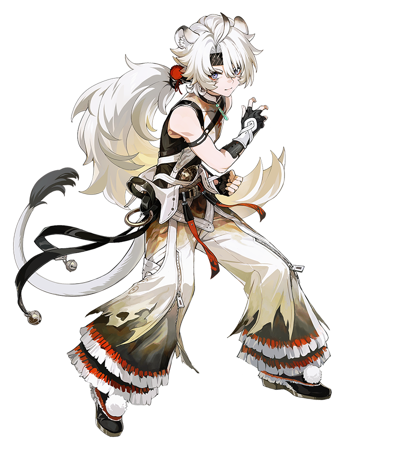
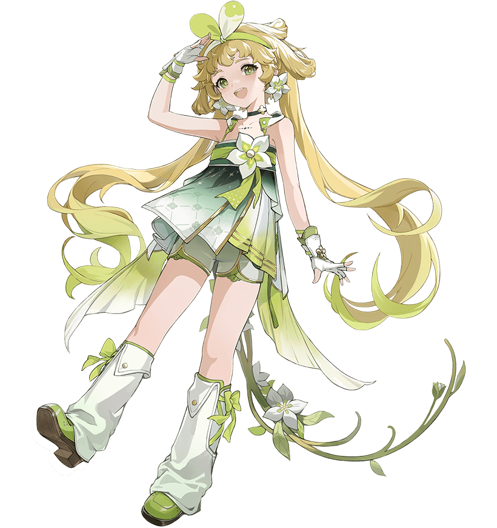
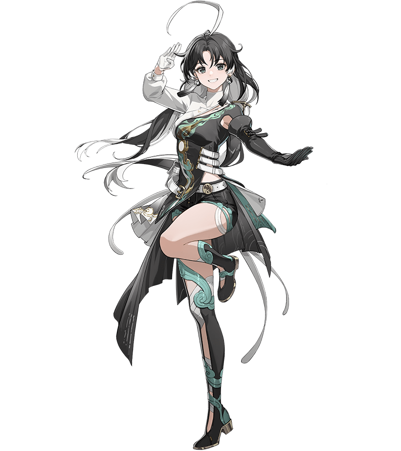
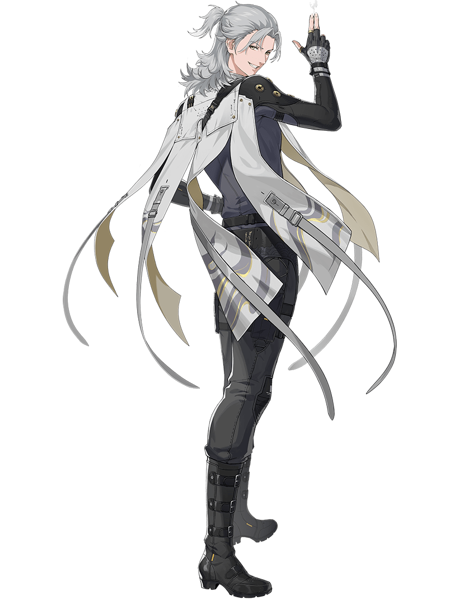
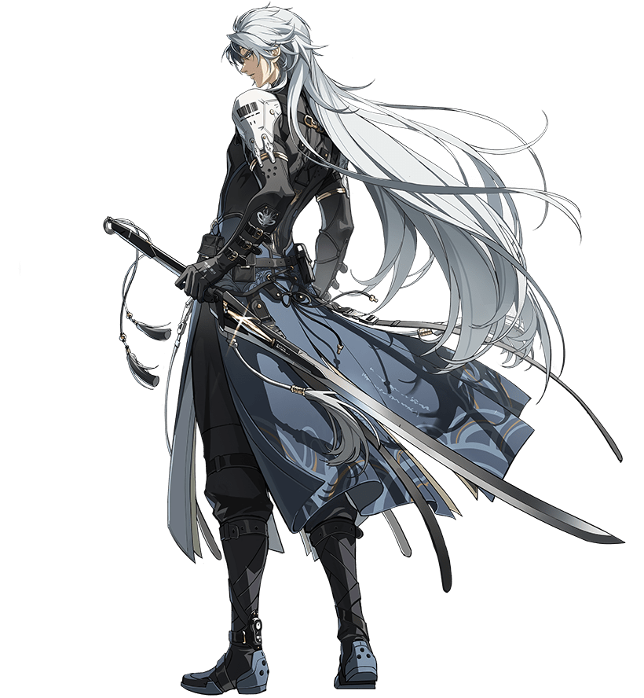

主要角色
瑝珑
-

凌阳
“起狮！今年的采青比赛也不能输啊！”
真诚热烈，善良灵性的异族来客。
于一个偶然的契机，凌阳加入了今州瑞狮团，
希望能用热情洋溢的“狮子舞”为他人驱散恐惧。
-

维里奈
“植物的语言安静但真诚，我可以把它们说的话讲给你听。”
跟随新联邦某先行公约小队来到今州的女孩，安静腼腆、体贴可靠。
作为植物育种员的她，有着超越年龄的坚韧。
在团队中，总是不知不觉间承担起无微不至的后勤角色。
-

鉴心
“气聚天地，日累月积。随风出拳，如此而已。”
生于原野，长于道馆的风仪拳传人，天真烂漫、心如明镜。
她是纯粹、执着和专注的理想代表，拥有追求武术极致的坚决信念。
此时的她正下山游历，体味生活百态、世间冷暖。
其他
-
安可
“很久很久以前……黑咩告诉了安可一个新地方！快来快来，快和安可一起去看看！”
黑海岸客卿安可，古灵精怪、活泼元气，喜欢用幻想和童话去记述友谊与冒险。
她的身旁总是环绕着两只羊咩，它们是安可最好的朋友和守护者。
安可会在黑咩、白咩的陪伴下，把整个世界都走遍！
-

秋水
“哟，老顾客，今天想打听什么？”
如雾一般捉摸不透的情报商人，总是对客人笑脸相迎。据说只要开出好价钱，就能从他手上买到称心如意的情报。 与安可是一对最佳拍档，两人总是结伴而行吵闹不休。
-

卡卡罗
“放心，我会让他们开出一个令我们满意的价钱。”
跨国独立雇佣兵组织“幽灵猎犬”团长，冷静严肃、不怒自威。
曾是流放者的他，几乎凭一己之力带领佣兵团威震一方。
虽然他心狠手辣、利益至上，但实际上都是为了保护自家人而用的手段。